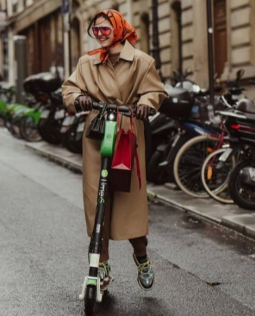
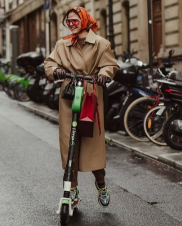

#1 Юбка в складку
Сейчас можно найти такую юбку самых разных цветов и принтов, что позволяет надеть ее в школу даже при строгом дресс-коде
Здесь собраны топ тренды осени 2021
 

Сейчас можно найти такую юбку самых разных цветов и принтов, что позволяет надеть ее в школу даже при строгом дресс-коде
Практичный тренд, который дополнительно утеплит образ и сделает интереснее. Особенно актуальны жилетки с выразительной фактурой, объемными косами, выразительными резинками
С точки зрения моделирования фигуры это лучший вариант. Надев низ с высокой талией и укороченный пиджак, ваши ноги будут казаться максимально длинными, а талия более выраженная, ведь длина пиджака заканчивается на самой тонкой части нашего тела
В тренде свободные укороченные кардиганы на пуговицах. Можно надеть по вверх футболок, водолазак, рубашек и даже в самостоятельном варианте
Тренд на яркие оттенки распространяется на весь осенний гардероб. Яркие пальто, актуальные в грядущем можном сезоне, – это своеобразная реакция на черный и бежевый оттенки, которые буквально заполонили модный мир за несколько последних лет. Помимо них есть другие чудесные цвета, и пришла пора отдать им должное
Впервые этот аксессуар вывели на подиум стилисты Gucci в 2018 году. В уличной моде он укоренился н сразу, но в 2021 настало время отдать ему должное.
Стежка – прием, который придает ткани особенно благородный вид, а заодно и улучшает ее свойства. Но если в былые времена стежка считалась уместной на верхней одежде для холодов и жилетах в жокейском стиле, то сегодня ее можно встретить в самых неожиданных местах. В тренде сумки, юбки, шляпы и береты, сшитые из стеганого полотна. Хотите ультрамодный аксессуар? Обратите внимание на объемные шарфы со стежкой – это действительно что-то принципиально новое
Бойфренды и мом не первый год остаются в топе самых популярных предметов женского гардероба. Сегодня без свободных удобных джинсов действительно не обойтись. Они точно не выйдут из моды в ближайшее время, поэтому можно без зазрений совести раскошелиться на солидную модель